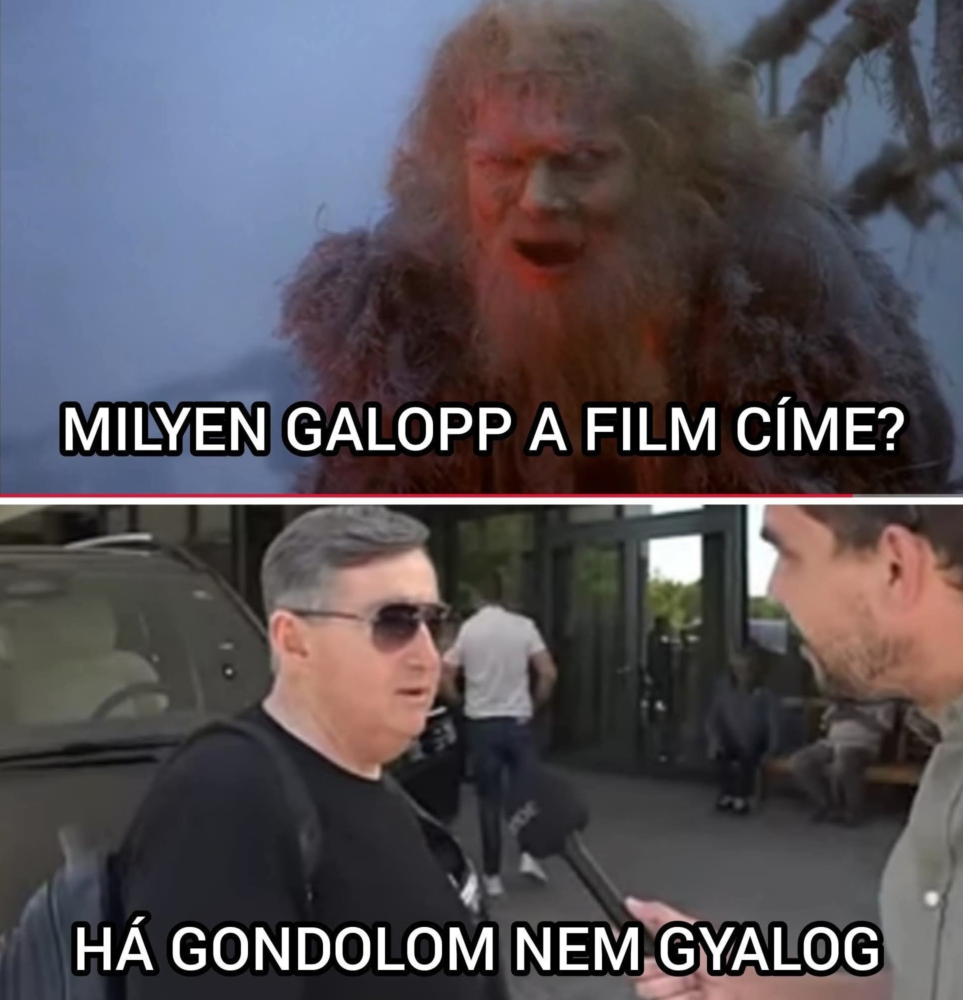
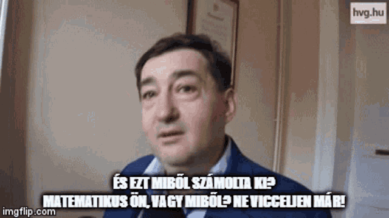
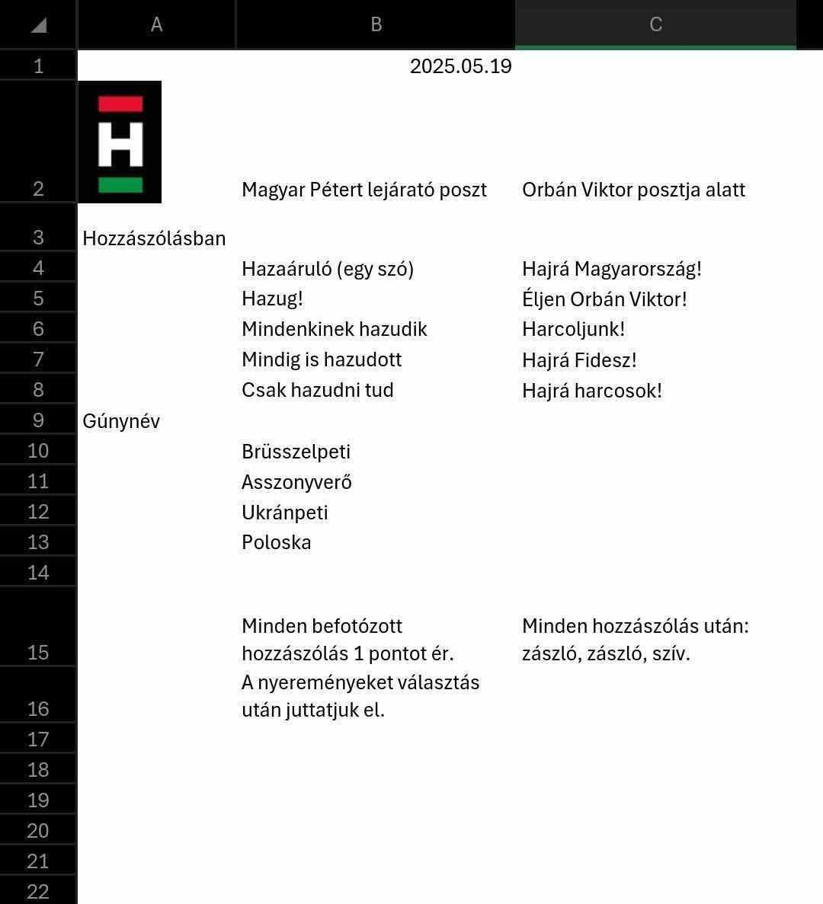

Mészáros Lőrinc győnyőrű mondata ennél jobban még én sem tudtam volna kifejezni magam.
Nagy eséllyel bátrak szót akarta haszálni, de sajna nem sikerült.
De igen ösztöndíjból nem lehet megélni, már ha kapsz🤷♂️
Ahol megtalálható
Teljes videó
Mindenkori királyunknál sajna néha a lemez is beakadhat, de ennyi faszság után meg sem lepődök.
Látszik nagyon elvan a hábórúval
Ahol megtalálható
Teljes videó
Lőlőkének a második legjobb mondata, de valahogy a propagandista szót nem tudja kiejteni 🤔.
Én ilyen szöveggel csinált bögréből innám szivesen a kávém.
10/10 would
Ahol megtalálható
Wiki oldal
Teljes videó
Lőlőkének a harmadik legjobb aranyköpése. Ez az ember egy setáló és beszélő vicc
Ez mutatja az élet gyönyörűségét igazából. És igen matematikusan ki számitjuk hogy LOPSZ
10/10 would
Ahol megtalálható
Teljes videó
Áh persze Német Tomika (Deutch Tamás) híres szavai amikor Rogán vagy a másik nem tudott ott lenni
Azért 15 év Brüsszel sem segít ezeken. De milyen lehet a németje🥶🥶🥶
Ahol megtalálható
Teljes videó
A híres szavai a NEM-nek (Nemzeti Ellenállás Mozgalom). Híresen összehasónlitja Zelenszkyt és Magyar Pétert minha ugyan azok lennének
Vicc at egész szerintem mert már az AI is bele kerül a képbe ami undorító a szemembe
De ha Magyar Peti Zelenszky akkor Vitya az Putyin???🤔🤔🤔🤔
Teljes videó
Tudom nem fideszes OKÉ???? De bele kellett tennem már csak azért is mert egy régi klasszikus. Meg ha mér vissza vonult Gyurika
Egyik kedvencem tőle és van egy csomó és lehet azokat is beteszem egyszer.
Love you Gyurika főleg az MC szervered o7
Teljes videó
Buzzwordok
Kedvenc buzzwordom amit hallottam.
Ezt a szót olyan emberekre használják aki nem kormány párti a.k.a nem fideszes a.k.a nagyjából mindenki
Ahol megtalálható
https://telex.hu/cimke/dollarbaloldal, https://444.hu/tag/dollarbaloldalIgazából egyszer írt róla Púzsér Róbert így nem nagyon van sok jelentése. Megeshet hogy a jővőben még többet látjuk
Ahol megtalálható
https://index.hu/24ora/?cimke=rubeljobboldalEz a szó azokat az embereket foglalja össze aki a Ukrán/Orosz hábórúban a békére szavaznak (vagyis majdnem mindenki)
Fontos tudni hogy ennek van a Háború békepárti és Béke hábórú párti változata is
Mint az elöző csak fordítottja. Akik a háborúval értenek együtt (mint mi) azok kerülenk ebbe a kategóriába
Ez a szó a Háború békepárti és Béke hábórú párti változatban is felbukkanhat mint az elöző
De kis is hiszi el ezeket 😭😭😭
A kedvenc csoportunk a HARCOSOK KLUBJA használja ezt közszeretettel.
Főleg Magyar Péter posztjain lehet vele találkozni mert ugye egy suttyó vagy mi🤣🤣🤣
Kell az a fiat 500 nemde?
NER vagyis Nemzeti Együttműködés Rendszere.Ezek igazából Királyunk társai
Igazából a gazdak srákok társasága ha úgy nézzük. Magyar peti nagyon ellene van igazából
Külön is kellett egy ilyen már csak azért is. Így röviden ezek hülye, manipulált és nem értő emberek (akiket nem hibáztatok). Ez Orbán nagy csapata és ötlete volt
Na most az eredeti Fight Club az PEAK. De ez inkább egy 2/10.
FONTOS Nem akarok szidni senkit aki benne van mert lehet hogy tényleg nem tudnak jobbat
MEGHÁT A FIAT 500-as KELL
Wiki oldal
Itt van a szó magyarázata, ami alapból rejtve van.
Itt van a szó magyarázata, ami alapból rejtve van.
Itt van a szó magyarázata, ami alapból rejtve van.
Itt van a szó magyarázata, ami alapból rejtve van.